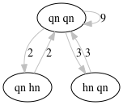
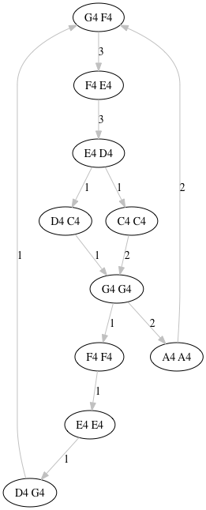
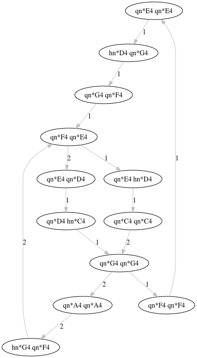
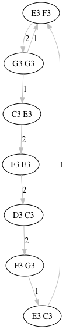
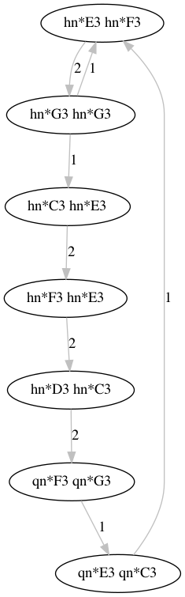
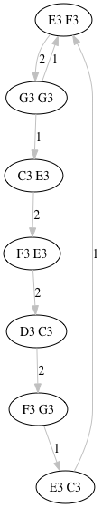
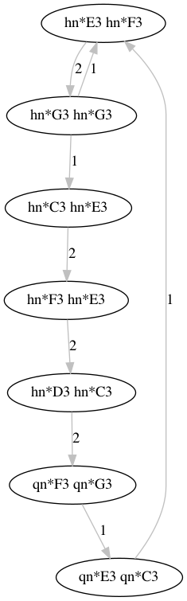

Musical Ngrams Round II
 What are "ngrams"? And how do they relate to music? Well ngrams are basically groups of tokens. These groups are of a certain given size - say phrases of three words. If we consider notes as tokens we get musical ngrams! We can count the number of occurrences of each ngram phrase, and thus know how many times a given phrase is repeated. How often does Bach repeat himself, for instance?
This is a short story about refactoring and new results.
After revisiting my MIDI::Ngram analysis module, I found that it was deeply broken with respect to multiples of things: channels, note durations and simultaneous events. Naturally I had to fix it!
First I discovered that only MIDI channel 0 was being considered. Shocking! I fixed that by refactoring the basic hash data-structure used to parse things, by just making it save to the channel being considered. Voila. Now the analysis of repetitions shows whatever channel you want to inspect.
With this improved data-structure in hand, I focused my attention on tallying note durations. That is, the time (in MIDI "ticks" not milliseconds) taken by each note, in the context of the tempo. Now the analysis can show note duration repetition too. Whew!
Okay. So the whole point of this module is to expose the number of times a musical phrase is repeated - not just note pitches alone and not just durations either - but both.
For this I added pitch and duration events by start-time to the event data-structure, as mentioned above. I process each with transliteration. By this I mean that, in order to use the module Lingua::EN::Ngram you need to encode the numerical note values. I pass this transliterated string through Lingua::EN::Ngram to get the number of repeated phrases. Now this module is made to ignore digits and punctuation. But that is exactly what my constructed music strings are made of. So by "transliterate" I mean apply this code to the music strings:
tr/0-9,*|/a-m/
You get out unpronounceable groups of alphabetical strings, but they can now be analyzed by Lingua::EN::Ngram. To return to music strings, we just reverse this transliteration. Voila!
Okay! After fixing things, next up was to generate transition network graphs of note pitches, duration and the combination of the two. This just involved looping over each event in order of start-time, and gathering the number of events to consider (the "nodes" of the graph). This I chose to divide by the hyphen ("dash") character.
So here are the results of analyzing ngrams of size 2, with a minimum of 2 occurrences in the "Twinkle Twinkle Little Star" MIDI file included with the distribution:
$ perl eg/ngram-play --files eg/twinkle_twinkle.mid --size 2 --min 2 --out ''
Durations: {
'0' => { 'hn qn' => 5, 'qn hn' => 6, 'qn qn' => 30 },
'1' => { 'hn hn' => 18, 'hn qn' => 2, 'qn hn' => 2, 'qn qn' => 4 }, }
}
Duration network: {
'0' => {
'hn qn-qn qn' => 3,
'qn hn-qn qn' => 2,
'qn qn-hn qn' => 3,
'qn qn-qn hn' => 2,
'qn qn-qn qn' => 9,
},
'1' => { 'hn hn-hn hn' => 8, 'hn hn-qn qn' => 2 },
}
Notes: {
'0' => {
'A4 A4' => 2,
'A4 G4' => 2,
'C4 C4' => 2,
'C4 G4' => 3,
'D4 C4' => 3,
'D4 D4' => 2,
'E4 D4' => 4,
'E4 E4' => 4,
'F4 E4' => 4,
'F4 F4' => 4,
'G4 A4' => 2,
'G4 F4' => 4,
'G4 G4' => 4,
},
'1' => {
'C3 E3' => 3,
'C3 F3' => 2,
'D3 C3' => 2,
'E3 D3' => 2,
'E3 F3' => 4,
'F3 E3' => 2,
'F3 G3' => 4,
'G3 C3' => 2,
'G3 E3' => 2,
'G3 G3' => 2,
}
}
Note network: {
'0' => {
'A4 A4-G4 F4' => 2,
'C4 C4-G4 G4' => 2,
'F4 E4-E4 D4' => 3,
'G4 F4-F4 E4' => 3,
'G4 G4-A4 A4' => 2,
},
'1' => {
'C3 E3-F3 E3' => 2,
'D3 C3-F3 G3' => 2,
'E3 F3-G3 G3' => 2,
'F3 E3-D3 C3' => 2,
}
}
Durations*Notes: {
'0' => {
'hn*G4 qn*F4' => 2,
'qn*A4 hn*G4' => 2,
'qn*A4 qn*A4' => 2,
'qn*C4 qn*C4' => 2,
'qn*C4 qn*G4' => 2,
'qn*D4 hn*C4' => 2,
'qn*D4 qn*D4' => 2,
'qn*E4 hn*D4' => 2,
'qn*E4 qn*D4' => 2,
'qn*E4 qn*E4' => 4,
'qn*F4 qn*E4' => 4,
'qn*F4 qn*F4' => 4,
'qn*G4 qn*A4' => 2,
'qn*G4 qn*F4' => 2,
'qn*G4 qn*G4' => 4,
},
'1' => {
'hn*C3 hn*E3' => 2,
'hn*C3 qn*F3' => 2,
'hn*D3 hn*C3' => 2,
'hn*E3 hn*D3' => 2,
'hn*E3 hn*F3' => 4,
'hn*F3 hn*E3' => 2,
'hn*F3 hn*G3' => 2,
'hn*G3 hn*G3' => 2,
'qn*F3 qn*G3' => 2,
}
}
Duration*Note network: {
'0' => {
'hn*G4 qn*F4-qn*F4 qn*E4' => 2,
'qn*A4 qn*A4-hn*G4 qn*F4' => 2,
'qn*C4 qn*C4-qn*G4 qn*G4' => 2,
'qn*F4 qn*E4-qn*E4 qn*D4' => 2,
'qn*G4 qn*G4-qn*A4 qn*A4' => 2,
},
'1' => {
'hn*C3 hn*E3-hn*F3 hn*E3' => 2,
'hn*D3 hn*C3-qn*F3 qn*G3' => 2,
'hn*E3 hn*F3-hn*G3 hn*G3' => 2,
'hn*F3 hn*E3-hn*D3 hn*C3' => 2,
}
}
And here are the graphs generated by this command:
$ perl eg/ngram-play --files eg/twinkle_twinkle.mid --size 2 --min 1 --out '' --image --chan 0
(Notice that the --min option is set to 1 this time. This means consider all ngrams that repeat at least once. Also --chan is 0 - the treble clef in this case.)
 
Here is the bass clef:
 


